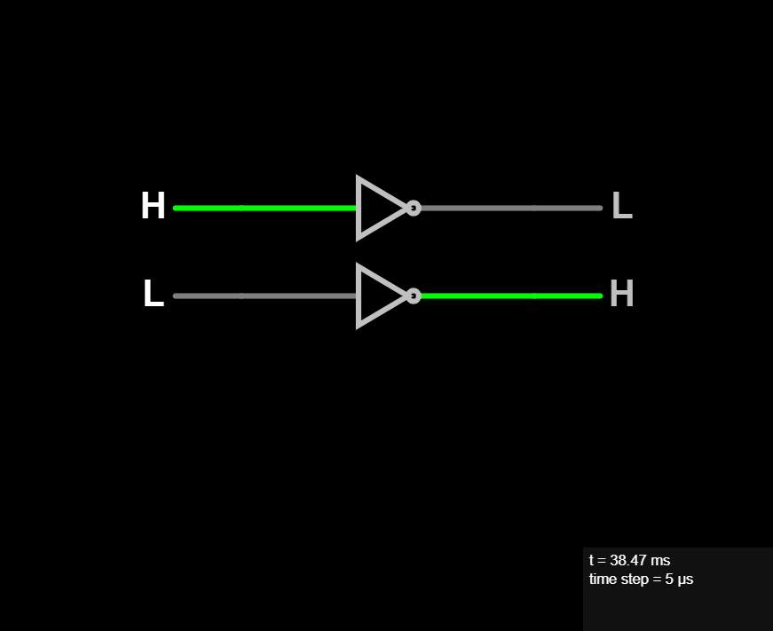
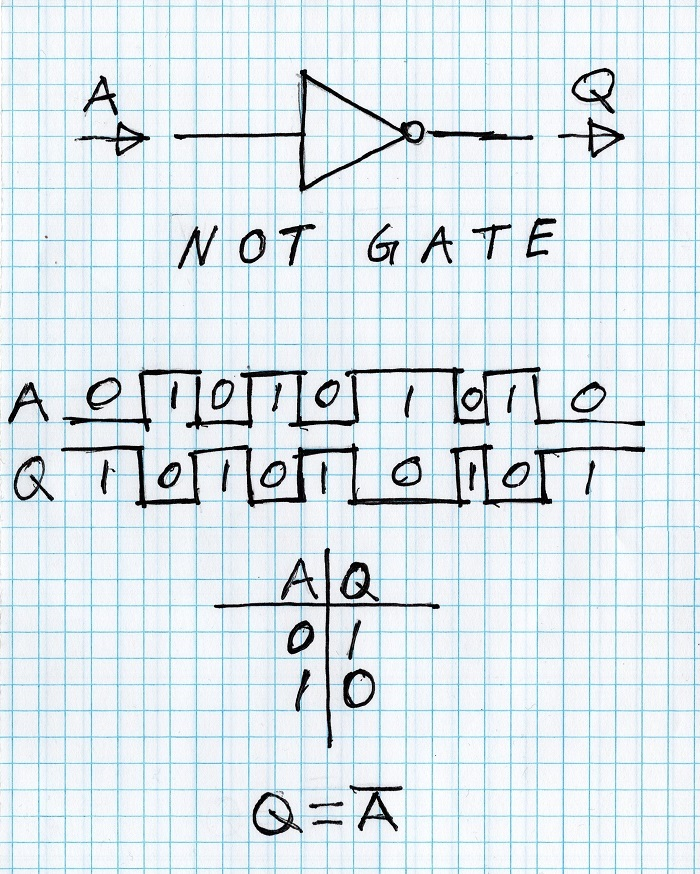

NOT Gate
The NOT gate output inverts the level of the input. So if given a LOW (0) it will output a HIGH (1) and if given a HIGH (1) it will output a LOW (1). It's very simple to understand. We get the opposite level of the input in the output.

By convention if a signal is inverted, then the name of the signal will have a bar over it. Which you can see in the handwritten logic equation at the bottom of the figure.
It's used extensively to reverse an active logic level. For example many chips will have active low signals. Which means to make the purpose of the signal active (turn ON) you must set the input to low. And to inactivate (turn OFF) the purpose of the signal you set the input to high.
Also we commonly think of the LOW (0) level being equals to a FALSE condition and the HIGH (1) level being equal to a TRUE condition.
So that in the case of an inverter (or NOT gate) we are saying make the FALSE condition now be TRUE. Or make the TRUE condition now be FALSE.
In Verilog and C like languages the bitwise NOT operator is the tilde:
Q = ~A